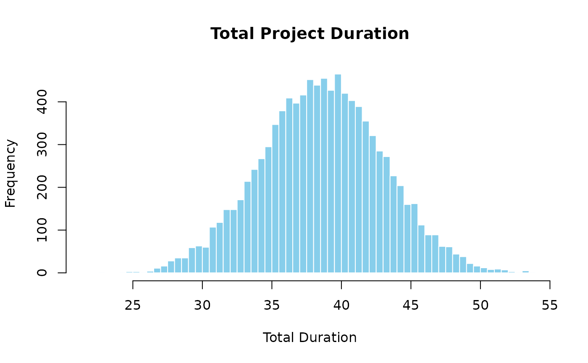
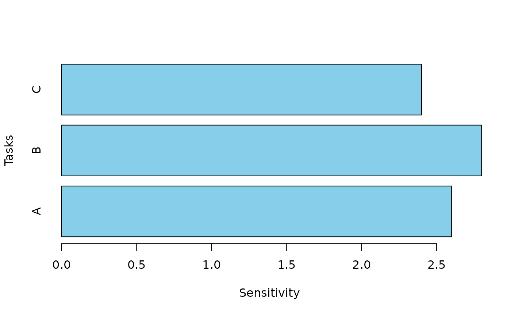

Monte Carlo (MC) simulation is a quantitative risk analysis technique used to understand the impact of risk and uncertainty in project management. It involves running multiple simulations to predict the possible outcomes of a project by varying the inputs randomly within specified ranges.
Steps in MC Simulation
Model Definition: Define the project model, including the objectives, timeline, and the variables that affect the project (e.g., costs, durations, resource availability).
Identify Uncertainties: Identify the uncertainties in the project. These could be the variability in task durations, costs, and other critical factors.
Assign Probability Distributions: For each uncertain variable, assign a probability distribution. Common distributions include normal, triangular, and uniform distributions, which represent the range of possible values and their likelihood.
Execute Simulation: Using random sampling, the simulation runs numerous iterations (typically thousands). In each iteration, random values are selected from the probability distributions for each uncertain variable, and the project’s outcomes are calculated.
Analyze Results: After running the simulation, analyze the results to understand the range of possible project outcomes. This analysis includes statistical summaries like mean, median, standard deviation, and percentiles, which help in understanding the probability of meeting project objectives under uncertainty.
Applications in Project Risk Analysis:
Schedule Risk Analysis: Assessing the likelihood of completing the project on time.
Cost Risk Analysis: Evaluating the probability of staying within budget.
Performance Risk Analysis: Understanding the likelihood of achieving project performance goals.
Advantages:
Provides a comprehensive view of project risks and their impacts. Helps in making informed decisions by quantifying uncertainties. Enhances the ability to prepare for various risk scenarios and develop mitigation strategies. Monte Carlo simulation is a powerful tool in project management, enabling project managers to foresee potential issues and plan accordingly to improve the chances of project success.
Example
First, load the package:
Next, set the number of simulations and describe probability distributions for 3 work packages:
num_simulations <- 10000
task_distributions <- list(
list(type = "normal", mean = 10, sd = 2), # Task A: Normal distribution
list(type = "triangular", a = 5, b = 10, c = 15), # Task B: Triangular distribution
list(type = "uniform", min = 8, max = 12) # Task C: Uniform distribution
)Then, set the correlation matrix between the 3 work packages:
Finally, run the simulation using the mcs function:
results <- mcs(num_simulations, task_distributions, correlation_matrix)To calculate the mean of the total duration:
cat("Mean Total Duration:", results$total_mean, "\n")
#> Mean Total Duration: 38.62362To calculate the variance of the total duration:
cat("Variance of Total Duration:", results$total_variance, "\n")
#> Variance of Total Duration: 19.42731To build a histogram of the total duration:
hist(results$total_distribution, breaks = 50, main = "Distribution of Total Project Duration",
xlab = "Total Duration", col = "skyblue", border = "white")
Contingency
Cost Contingency: Identify the cost associated with a specific confidence level. For instance, if you want a 90% confidence level that the project will not exceed the budget, find the cost at the 90th percentile of the cost distribution.
Schedule Contingency: Similarly, identify the duration at a desired confidence level. For example, if you want a 95% confidence level that the project will be completed on time, find the project duration at the 95th percentile of the schedule distribution.
Example
For the previous example, calculate the contingency with a confidence level of 95%:
contingency <- contingency(results, phigh = 0.95, pbase = 0.50)
cat("Contingency based on 95th percentile and 50th percentile:", contingency)
#> Contingency based on 95th percentile and 50th percentile: 7.214802Key Considerations
Confidence Levels: Higher confidence levels result in larger contingencies but reduce the risk of overruns.
Risk Appetite: The organization’s risk tolerance will influence the chosen confidence level.
Data Quality: The accuracy of the probability distributions and input data significantly impacts the reliability of the contingency estimate.
Sensitivity
Estimating sensitivity involves determining how changes in input variables impact the output variables of interest, such as project cost or duration. Sensitivity analysis identifies the most critical factors influencing the project’s outcomes, helping project managers focus on managing these key risks.
Types of Sensitivity Analysis
Correlation Coefficients: Calculate the correlation coefficients between each input variable and the output variable. This measures the strength and direction of the linear relationship between the input and the output.
Regression Analysis: Perform a regression analysis to quantify the impact of each input variable on the output. This provides coefficients that indicate how much change in the output is expected for a unit change in each input.
Tornado Diagrams: Create tornado diagrams to visually represent the sensitivity of the output variable to changes in each input variable. The longer the bar, the greater the impact of the input on the output.
Example
For the previous example, calculate the sensitivity of each task and print the results:
sensitivity_results <- sensitivity(task_distributions, correlation_matrix)
cat("Sensitivity of the variance in total cost with respect to the variance in each task cost:\n")
#> Sensitivity of the variance in total cost with respect to the variance in each task cost:
print(sensitivity_results)
#> [1] 2.6 2.8 2.4Build a vertical barchart and display the results:
data <- data.frame(
Tasks = c('A', 'B', 'C'),
Sensitivity = sensitivity_results
)
barplot(height=data$Sensitivity, names=data$Tasks, col='skyblue',
horiz=TRUE, xlab = 'Sensitivity', ylab = 'Tasks')
Interpretation and Action
Focus on High-Impact Variables: Based on the sensitivity analysis, prioritize monitoring and managing the inputs with the highest impact (e.g., Task B in this example).
Develop Mitigation Strategies: Implement risk mitigation strategies for the most sensitive inputs to reduce their potential negative impact on the project.
Inform Stakeholders: Communicate the sensitivity findings to stakeholders to provide a clear understanding of where project risks are concentrated.